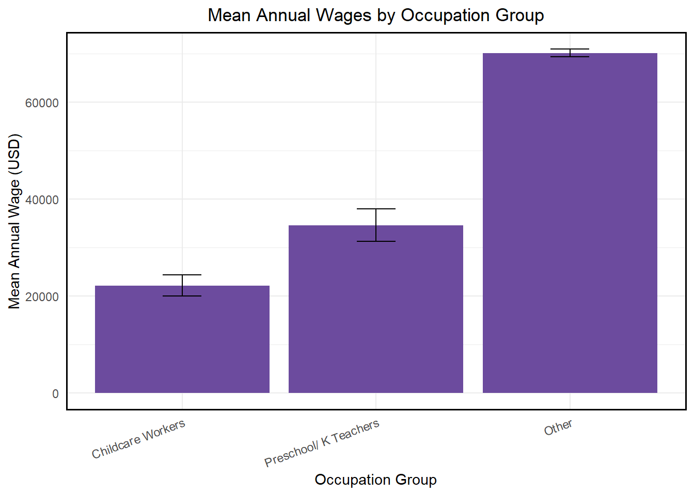
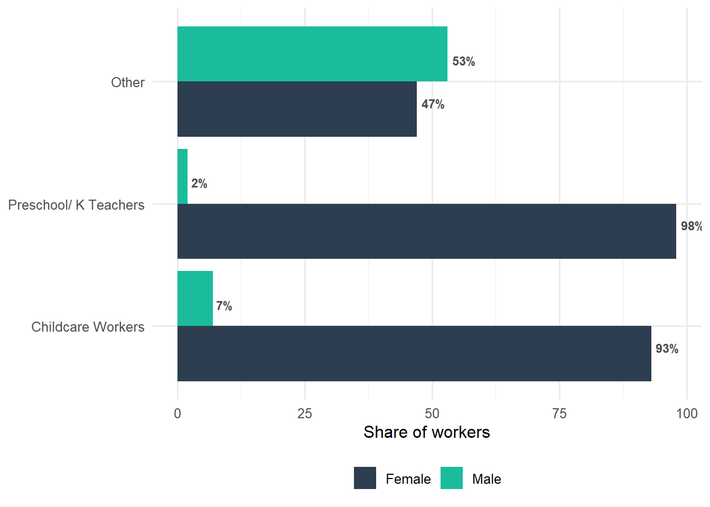
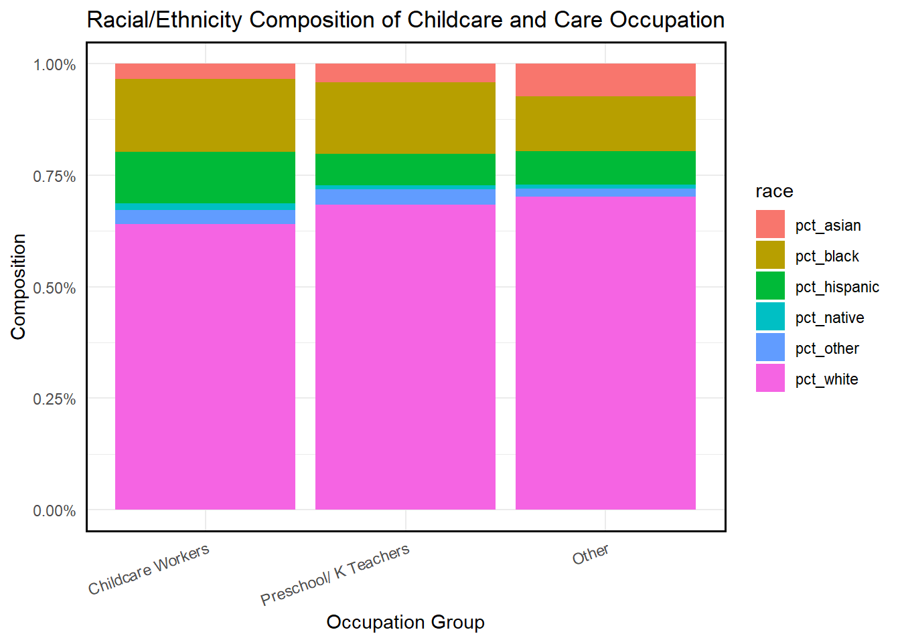
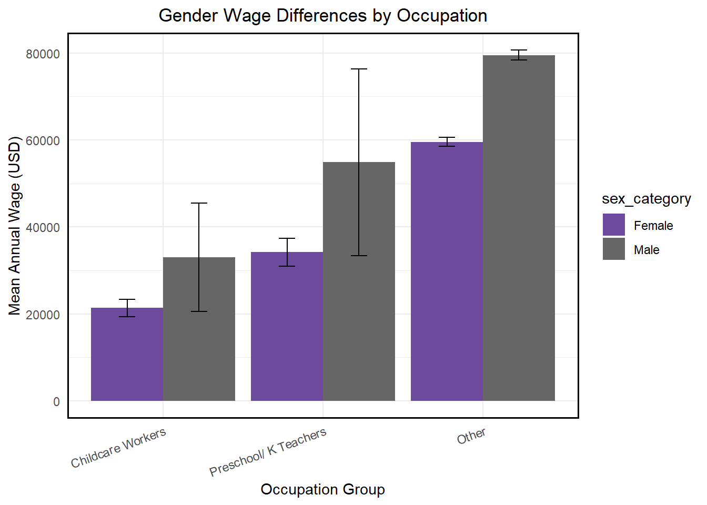
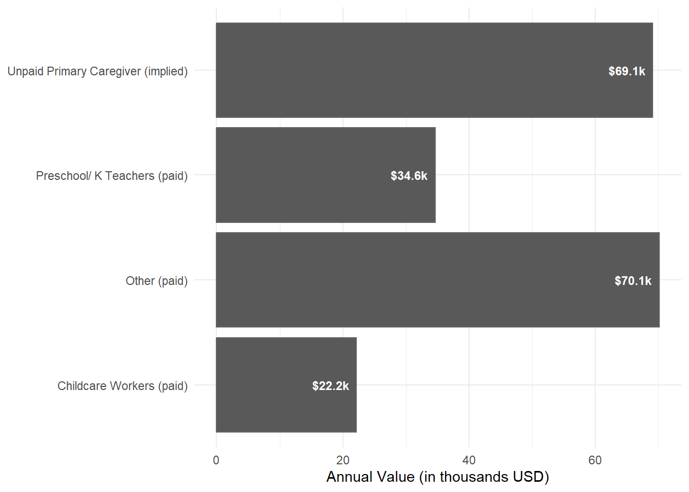
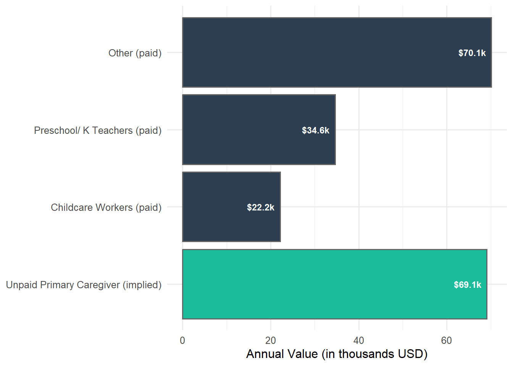

# Packages, survey options, and BLS wage constants live in R/setup.R.
source(here::here("R", "setup.R"))Visible Inequalities: Wages in Paid Childcare Work
1 Introduction
Childcare is an undervalued service in both unpaid (household labor) and paid work (childcare workforce). Both are closely connected, families supply time, while the childcare industry supplies services. The objective of this project is to estimate the dollar value of unpaid childcare and measure it against market pay for childcare workers, demonstrating that childcare is undervalued both within households and the childcare industry.
Research Question 2 (comparative) Among paid childcare workers, how do wages compare to similar occupations (Preschool teachers, Home and Health Aides)? What is the gender composition and race/ethnicity profile of unpaid and paid childcare work?
2 Setup
Load necessary libraries.
Survey Defaults
Survey variance options (survey.lonely.psu, scipen) are set once in R/setup.R, sourced above.
3 Load and Tidy Data
The data is loaded into the program to prepare for analyses.
# R automatically decompresses .gz files
# CPS raw extract downloaded from IPUMS-CPS. Place the file at
# data/raw/cps_ipums.csv.gz (see data/raw/README.md for how to recreate
# the extract).
cps_raw <- read_csv(here::here("data", "raw", "cps_ipums.csv.gz"))
dim(cps_raw)[1] 1341221 194Keep ASEC-only observations/Clean Variables
cps <- cps_raw |>
filter(
YEAR == 2023,
ASECFLAG == 1
) |>
#Key variables as numeric
mutate(
AGE = as.numeric(AGE),
SEX = as.numeric(SEX),
RACE = as.numeric(RACE),
HISPAN = as.numeric(HISPAN),
EMPSTAT = as.numeric(EMPSTAT),
OCC = as.numeric(OCC),
ASECWT = as.numeric(ASECWT),
INCWAGE = as.numeric(INCWAGE),
UHRSWORKT = as.numeric(UHRSWORKT),
#Convert replicate weights to numeric
across(matches("^REPWTP[0-9]+$"), as.numeric),
#Clean INCWAGE Variable
INCWAGE = ifelse(INCWAGE %in% c(99999999, 99999998), NA_real_, INCWAGE)
) |>
#Trim dataset to relevant variables
select(
YEAR, ASECWT, ASECFLAG, matches("^REPWTP[0-9]+$"),
AGE, SEX, RACE, HISPAN, EDUC,
EMPSTAT, OCC, INCWAGE, UHRSWORKT,
)
dim(cps)[1] 146133 172summary(cps$INCWAGE) Min. 1st Qu. Median Mean 3rd Qu. Max. NA's
0 0 17600 39407 55000 1549999 29483 Save an .rds Version for Faster Reloads
saveRDS(cps, here::here("data", "processed", "cps_2023_childcare.rds"))cps <- readRDS(here::here("data", "processed", "cps_2023_childcare.rds"))
head(cps)# A tibble: 6 × 172
YEAR ASECWT ASECFLAG REPWTP1 REPWTP2 REPWTP3 REPWTP4 REPWTP5 REPWTP6 REPWTP7
<dbl> <dbl> <dbl> <dbl> <dbl> <dbl> <dbl> <dbl> <dbl> <dbl>
1 2023 1580. 1 775. 2593. 806. 2437. 2311. 2066. 2403.
2 2023 1580. 1 775. 2593. 806. 2437. 2311. 2066. 2403.
3 2023 1790. 1 863. 2844. 892. 2878. 2720. 2444. 2637.
4 2023 1790. 1 863. 2844. 892. 2878. 2720. 2444. 2637.
5 2023 1308. 1 683. 1716. 645. 1927. 1814. 1755. 2121.
6 2023 1307. 1 669. 2090. 579. 1745. 1611. 1824. 2120.
# ℹ 162 more variables: REPWTP8 <dbl>, REPWTP9 <dbl>, REPWTP10 <dbl>,
# REPWTP11 <dbl>, REPWTP12 <dbl>, REPWTP13 <dbl>, REPWTP14 <dbl>,
# REPWTP15 <dbl>, REPWTP16 <dbl>, REPWTP17 <dbl>, REPWTP18 <dbl>,
# REPWTP19 <dbl>, REPWTP20 <dbl>, REPWTP21 <dbl>, REPWTP22 <dbl>,
# REPWTP23 <dbl>, REPWTP24 <dbl>, REPWTP25 <dbl>, REPWTP26 <dbl>,
# REPWTP27 <dbl>, REPWTP28 <dbl>, REPWTP29 <dbl>, REPWTP30 <dbl>,
# REPWTP31 <dbl>, REPWTP32 <dbl>, REPWTP33 <dbl>, REPWTP34 <dbl>, …Recode Sex, Race/Ethnicity and Occupations
#Clean race up a bit
cps <- cps |>
mutate(
RACE = ifelse(RACE == 999, NA_integer_, RACE)
)
cps <- cps |>
mutate(
#Recode sex category
sex_category = case_when(
SEX == 1 ~ "Male",
SEX == 2 ~ "Female",
TRUE ~ NA_character_
),
female = (sex_category == "Female"),
male = (sex_category == "Male"),
#Recode race/ethnicity
hispanic_any = case_when(
HISPAN == 0 | HISPAN == 100 ~ 0L,
HISPAN > 0 & HISPAN < 900 ~ 1L,
TRUE ~ NA_integer_
),
white_nh = ifelse(hispanic_any == 0L & RACE == 100, 1L, 0L),
black_nh = ifelse(hispanic_any == 0L & RACE == 200, 1L, 0L),
native_nh = ifelse(hispanic_any == 0L & RACE == 300, 1L, 0L),
asian_nh = ifelse(
hispanic_any == 0L & RACE %in% c(650, 651, 652), 1L, 0L
),
other_nh = ifelse(
hispanic_any == 0L &
RACE %in% c(
700, #other single race, n.e.c.
801:820, #2-3 race combos (with various combos)
830 #4-5 race combos
),
1L, 0L
),
#Collapsed race/ethnicity category
race_cat = case_when(
hispanic_any == 1L ~ "Hispanic",
white_nh == 1L ~ "White",
black_nh == 1L ~ "Black",
asian_nh == 1L ~ "Asian/Pacific Islander",
native_nh == 1L ~ "Native American",
other_nh == 1L ~ "Other/Multiracial",
TRUE ~ NA_character_
),
#Recode occupation groups
childcare_worker = (OCC == 4600),
pre_kinder_teach = (OCC == 2300),
#home_health_aide = (OCC %in% c(3601,3602)), #not needed for this project, but could be added back in if we want to expand to other care occupations
#Collapsed occupation category
occ_group = case_when(
childcare_worker ~ "Childcare Workers",
pre_kinder_teach ~ "Preschool/ K Teachers",
#home_health_aide ~ "Home Health & Personal Care Aides", removing home health aides for this project to focus on childcare occupations, but could be added back in if we want to expand to other care occupations
TRUE ~ "Other"
),
#Factor sex category
sex_category = factor(
sex_category, levels = c("Female", "Male")
),
#Factor race_cat
race_cat = factor(
race_cat,
levels = c(
"White",
"Black",
"Hispanic",
"Asian/Pacific Islander",
"Native American",
"Other/Multiracial"
)
),
#Factor occupation group
occ_group = factor(
occ_group,
levels = c(
"Childcare Workers",
"Preschool/ K Teachers",
#"Home Health & Personal Care Aides", removing for now
"Other"
)
)
)
#Check recode
table(cps$sex_category, useNA = "ifany")
Female Male
74834 71299 Filter to Workers Aged 16 and Older with Positive Wages
#Define employed workers with positive wages
cps_workers <- cps |>
mutate(
employed = EMPSTAT %in% c(10,12),
wage_annual = ifelse(INCWAGE > 0, INCWAGE, NA_real_)
) |>
#Filter to age > 16
filter(
AGE >= 16,
employed,
!is.na(wage_annual)
)
cps_workers <- cps_workers |>
mutate(
full_time = UHRSWORKT >= 35
)
cps_workers# A tibble: 62,957 × 188
YEAR ASECWT ASECFLAG REPWTP1 REPWTP2 REPWTP3 REPWTP4 REPWTP5 REPWTP6 REPWTP7
<dbl> <dbl> <dbl> <dbl> <dbl> <dbl> <dbl> <dbl> <dbl> <dbl>
1 2023 1790. 1 863. 2844. 892. 2878. 2720. 2444. 2637.
2 2023 1344. 1 695. 2170. 593. 1808. 1665. 1859. 2162.
3 2023 1344. 1 695. 2170. 593. 1808. 1665. 1859. 2162.
4 2023 1182. 1 598. 1651. 663. 1849. 1510. 1655. 1926.
5 2023 1422. 1 709. 1802. 671. 2061. 1944. 1888. 2356.
6 2023 1153. 1 584. 2068. 591. 1698. 1689. 1374. 1656.
7 2023 1321. 1 675. 1910. 709. 2053. 1729. 1979. 2171.
8 2023 1304. 1 660. 687. 1740. 1748. 1614. 1828. 697.
9 2023 1304. 1 660. 687. 1740. 1748. 1614. 1828. 697.
10 2023 1344. 1 687. 715. 1785. 1815. 1672. 1867. 712.
# ℹ 62,947 more rows
# ℹ 178 more variables: REPWTP8 <dbl>, REPWTP9 <dbl>, REPWTP10 <dbl>,
# REPWTP11 <dbl>, REPWTP12 <dbl>, REPWTP13 <dbl>, REPWTP14 <dbl>,
# REPWTP15 <dbl>, REPWTP16 <dbl>, REPWTP17 <dbl>, REPWTP18 <dbl>,
# REPWTP19 <dbl>, REPWTP20 <dbl>, REPWTP21 <dbl>, REPWTP22 <dbl>,
# REPWTP23 <dbl>, REPWTP24 <dbl>, REPWTP25 <dbl>, REPWTP26 <dbl>,
# REPWTP27 <dbl>, REPWTP28 <dbl>, REPWTP29 <dbl>, REPWTP30 <dbl>, …4 Build Survey Designs
design_cps <- svrepdesign(
data = cps_workers,
weights = ~ASECWT,
repweights = "REPWTP[0-9]+$",
type = "successive-difference",
combined.weights = TRUE,
mse = TRUE
)
design_cps <- update(
design_cps,
full_time = cps_workers$full_time
)
# Mean wages by occupation & race, full-time only
svyby(
~wage_annual,
~occ_group + race_cat,
subset(design_cps, full_time),
svymean,
na.rm = TRUE
) occ_group
Childcare Workers.White Childcare Workers
Preschool/ K Teachers.White Preschool/ K Teachers
Other.White Other
Childcare Workers.Black Childcare Workers
Preschool/ K Teachers.Black Preschool/ K Teachers
Other.Black Other
Childcare Workers.Hispanic Childcare Workers
Preschool/ K Teachers.Hispanic Preschool/ K Teachers
Other.Hispanic Other
Childcare Workers.Asian/Pacific Islander Childcare Workers
Preschool/ K Teachers.Asian/Pacific Islander Preschool/ K Teachers
Other.Asian/Pacific Islander Other
Childcare Workers.Native American Childcare Workers
Preschool/ K Teachers.Native American Preschool/ K Teachers
Other.Native American Other
Childcare Workers.Other/Multiracial Childcare Workers
Preschool/ K Teachers.Other/Multiracial Preschool/ K Teachers
Other.Other/Multiracial Other
race_cat wage_annual
Childcare Workers.White White 25733.99
Preschool/ K Teachers.White White 39785.55
Other.White White 79088.50
Childcare Workers.Black Black 28004.87
Preschool/ K Teachers.Black Black 35559.19
Other.Black Black 62065.26
Childcare Workers.Hispanic Hispanic 35073.20
Preschool/ K Teachers.Hispanic Hispanic 30255.10
Other.Hispanic Hispanic 59291.25
Childcare Workers.Asian/Pacific Islander Asian/Pacific Islander 32017.61
Preschool/ K Teachers.Asian/Pacific Islander Asian/Pacific Islander 44417.12
Other.Asian/Pacific Islander Asian/Pacific Islander 100382.96
Childcare Workers.Native American Native American 26053.69
Preschool/ K Teachers.Native American Native American 30406.57
Other.Native American Native American 54431.69
Childcare Workers.Other/Multiracial Other/Multiracial 28155.49
Preschool/ K Teachers.Other/Multiracial Other/Multiracial 29243.62
Other.Other/Multiracial Other/Multiracial 69056.67
se
Childcare Workers.White 1993.2092
Preschool/ K Teachers.White 2107.3978
Other.White 546.4373
Childcare Workers.Black 2718.3287
Preschool/ K Teachers.Black 3361.4796
Other.Black 1138.4377
Childcare Workers.Hispanic 4424.2385
Preschool/ K Teachers.Hispanic 3682.2382
Other.Hispanic 1309.0475
Childcare Workers.Asian/Pacific Islander 11731.2577
Preschool/ K Teachers.Asian/Pacific Islander 10105.9177
Other.Asian/Pacific Islander 1943.0222
Childcare Workers.Native American 1919.9412
Preschool/ K Teachers.Native American 8849.5975
Other.Native American 3137.2174
Childcare Workers.Other/Multiracial 3006.5625
Preschool/ K Teachers.Other/Multiracial 4437.7659
Other.Other/Multiracial 3614.76805 Descriptive Results
Composition of Sex Category in Each Occupation
sex_comp <- svyby(
~sex_category,
~occ_group,
design_cps,
svymean,
na.rm = TRUE
)
sex_compRace/Ethnicity Composition by Occupation
race_comp <- svyby(
~race_cat,
~occ_group,
design_cps,
svymean,
na.rm = TRUE
)
race_comp
#Proportion of full_time workers by occupation and race
svyby(
~full_time,
~occ_group + ~race_cat,
design_cps,
svymean,
na.rm = TRUE
)Mean Wages by Occupation
mean_wage_occ <- svyby(
~wage_annual,
~occ_group,
design_cps,
svymean,
na.rm = TRUE
)
mean_wage_occMean Wage by Occupation and Sex
mean_wage_sex <- svyby(
~wage_annual,
~occ_group + sex_category,
design_cps,
svymean,
na.rm = TRUE
)
mean_wage_sexOccupation Mean Wages by Race/Ethnicity
mean_wage_r <- svyby(
~wage_annual,
~occ_group + race_cat,
design_cps,
svymean,
na.rm = TRUE
)
mean_wage_r6 Regression
Preliminary
cps_reg <- svyglm(
wage_annual ~ occ_group + sex_category + race_cat + full_time + AGE,
design = design_cps
)
summary(cps_reg)
Call:
svyglm(formula = wage_annual ~ occ_group + sex_category + race_cat +
full_time + AGE, design = design_cps)
Survey design:
update(design_cps, full_time = cps_workers$full_time)
Coefficients:
Estimate Std. Error t value
(Intercept) -28577.41 1911.21 -14.952
occ_groupPreschool/ K Teachers 2486.01 1901.41 1.307
occ_groupOther 24521.13 1602.47 15.302
sex_categoryMale 15783.40 782.13 20.180
race_catBlack -13152.25 1193.88 -11.016
race_catHispanic -15705.74 1347.80 -11.653
race_catAsian/Pacific Islander 19488.29 1870.76 10.417
race_catNative American -19332.43 2851.83 -6.779
race_catOther/Multiracial -4113.22 3286.68 -1.251
full_timeTRUE 41393.90 1041.25 39.754
AGE 755.71 25.48 29.663
Pr(>|t|)
(Intercept) < 0.0000000000000002 ***
occ_groupPreschool/ K Teachers 0.193
occ_groupOther < 0.0000000000000002 ***
sex_categoryMale < 0.0000000000000002 ***
race_catBlack < 0.0000000000000002 ***
race_catHispanic < 0.0000000000000002 ***
race_catAsian/Pacific Islander < 0.0000000000000002 ***
race_catNative American 0.000000000264 ***
race_catOther/Multiracial 0.213
full_timeTRUE < 0.0000000000000002 ***
AGE < 0.0000000000000002 ***
---
Signif. codes: 0 '***' 0.001 '**' 0.01 '*' 0.05 '.' 0.1 ' ' 1
(Dispersion parameter for gaussian family taken to be 7013116307)
Number of Fisher Scoring iterations: 2Add Sex x Occupation Interaction
cps_reg_int <- svyglm(
wage_annual ~ occ_group * sex_category + race_cat + full_time + AGE,
design = design_cps
)
summary(cps_reg_int)
Call:
svyglm(formula = wage_annual ~ occ_group * sex_category + race_cat +
full_time + AGE, design = design_cps)
Survey design:
update(design_cps, full_time = cps_workers$full_time)
Coefficients:
Estimate Std. Error t value
(Intercept) -28880.95 1954.23 -14.779
occ_groupPreschool/ K Teachers 2604.41 1925.28 1.353
occ_groupOther 24825.04 1632.56 15.206
sex_categoryMale 20096.33 3870.73 5.192
race_catBlack -13154.38 1194.06 -11.017
race_catHispanic -15705.71 1347.88 -11.652
race_catAsian/Pacific Islander 19485.22 1871.28 10.413
race_catNative American -19329.98 2851.98 -6.778
race_catOther/Multiracial -4110.36 3286.82 -1.251
full_timeTRUE 41397.97 1042.59 39.707
AGE 755.74 25.48 29.662
occ_groupPreschool/ K Teachers:sex_categoryMale 4693.77 12790.82 0.367
occ_groupOther:sex_categoryMale -4322.23 4087.15 -1.058
Pr(>|t|)
(Intercept) < 0.0000000000000002 ***
occ_groupPreschool/ K Teachers 0.178
occ_groupOther < 0.0000000000000002 ***
sex_categoryMale 0.000000681362 ***
race_catBlack < 0.0000000000000002 ***
race_catHispanic < 0.0000000000000002 ***
race_catAsian/Pacific Islander < 0.0000000000000002 ***
race_catNative American 0.000000000275 ***
race_catOther/Multiracial 0.213
full_timeTRUE < 0.0000000000000002 ***
AGE < 0.0000000000000002 ***
occ_groupPreschool/ K Teachers:sex_categoryMale 0.714
occ_groupOther:sex_categoryMale 0.292
---
Signif. codes: 0 '***' 0.001 '**' 0.01 '*' 0.05 '.' 0.1 ' ' 1
(Dispersion parameter for gaussian family taken to be 7013102939)
Number of Fisher Scoring iterations: 2# Check the levels used in the model/design
levels(design_cps$variables$occ_group)[1] "Childcare Workers" "Preschool/ K Teachers" "Other" levels(design_cps$variables$sex_category)[1] "Female" "Male" levels(design_cps$variables$race_cat)[1] "White" "Black" "Hispanic"
[4] "Asian/Pacific Islander" "Native American" "Other/Multiracial" class(design_cps$variables$full_time)[1] "logical"Predicted Wages for Each Group
newdat <- expand.grid(
occ_group = c("Childcare Workers", "Preschool/ K Teachers", "Other"),
sex_category = c("Female", "Male"),
race_cat = "White", # fix race to simplify story
full_time = TRUE, # full-time workers
AGE = 30 # pick a representative age
)
preds <- predict(
cps_reg_int,
newdata = newdat,
se.fit = TRUE
)
pred_df <- newdat |>
mutate(
wage_pred = as.numeric(preds$fit),
wage_se = as.numeric(preds$se.fit),
wage_lo = wage_pred - 1.96 * wage_se,
wage_hi = wage_pred + 1.96 * wage_se
)
pred_df
#Plot
ggplot(pred_df, aes(x = occ_group, y = wage_pred,
fill = sex_category)) +
geom_col(position = position_dodge(width = 0.6)) +
geom_errorbar(aes(ymin = wage_lo, ymax = wage_hi),
position = position_dodge(width = 0.6),
width = 0.2) +
labs(
x = "Occupation group",
y = "Predicted annual wage (US$)",
fill = "Sex",
title = "Predicted annual wages by occupation and sex\n(White, age 35, full-time, CPS 2023)"
) +
scale_y_continuous(labels = scales::dollar_format())7 Summary Table
Key Statistics by Occupation
## 1. Mean wage by occupation ----
wage_occ <- svyby(
~ wage_annual,
~ occ_group,
design_cps,
svymean,
na.rm = TRUE
) |>
as.data.frame() |>
rename(
mean_wage = wage_annual,
se_wage = se
)
## 2. Sex composition by occupation ----
# (Using the structure you showed earlier:
# columns I(sex_category)Female, I(sex_category)Male, se1, se2)
sex_occ <- svyby(
~ sex_category,
~ occ_group,
design_cps,
svymean,
na.rm = TRUE
) |>
as.data.frame() |>
mutate(
pct_female = sex_categoryFemale * 100,
pct_male = sex_categoryMale * 100
) |>
select(occ_group, pct_female, pct_male)
## 3. Full-time share by occupation ----
ft_occ <- svyby(
~ full_time,
~ occ_group,
design_cps,
svymean,
na.rm = TRUE
) |>
as.data.frame() |>
mutate(
pct_fulltime = full_timeTRUE * 100
) |>
select(occ_group, pct_fulltime)
## 4. Join everything into one CPS summary table ----
cps_table <- wage_occ |>
select(occ_group, mean_wage, se_wage) |>
left_join(sex_occ, by = "occ_group") |>
left_join(ft_occ, by = "occ_group")
cps_table occ_group mean_wage se_wage pct_female pct_male pct_fulltime
1 Childcare Workers 22167.83 1124.0725 93.04066 6.959343 57.79188
2 Preschool/ K Teachers 34625.88 1694.8258 97.99262 2.007382 82.35028
3 Other 70137.29 406.1268 46.99072 53.009278 86.06340Put Table into Kable Format
cps_table_display <- cps_table |>
mutate(
# pretty formatting
mean_wage_fmt = sprintf("$%s", format(round(mean_wage, 0), big.mark = ",")),
se_wage_fmt = sprintf("$%s", format(round(se_wage, 0), big.mark = ",")),
pct_female_fmt = sprintf("%.1f%%", pct_female),
pct_male_fmt = sprintf("%.1f%%", pct_male),
pct_fulltime_fmt = sprintf("%.1f%%", pct_fulltime)
) |>
select(
`Occupation group` = occ_group,
`Mean annual wage` = mean_wage_fmt,
`SE (wage)` = se_wage_fmt,
`% female` = pct_female_fmt,
`% male` = pct_male_fmt,
`% full-time` = pct_fulltime_fmt
)
kable(
cps_table_display,
caption = "Summary of paid care and other occupations, CPS ASEC 2023",
align = c("l", "r", "r", "r", "r", "r")
) |>
kable_styling(full_width = FALSE)| Occupation group | Mean annual wage | SE (wage) | % female | % male | % full-time |
|---|---|---|---|---|---|
| Childcare Workers | $22,168 | $1,124 | 93.0% | 7.0% | 57.8% |
| Preschool/ K Teachers | $34,626 | $1,695 | 98.0% | 2.0% | 82.4% |
| Other | $70,137 | $ 406 | 47.0% | 53.0% | 86.1% |
8 Visualizations
Mean Wages by Occupation Plot
mean_wage_occ <- svyby(
~wage_annual,
~occ_group,
design_cps,
svymean,
na.rm = TRUE
)|>
data.frame()|>
mutate(
mean_wage = wage_annual,
se_wage = se
)
mean_wage_occ occ_group wage_annual se mean_wage
Childcare Workers Childcare Workers 22167.83 1124.0725 22167.83
Preschool/ K Teachers Preschool/ K Teachers 34625.88 1694.8258 34625.88
Other Other 70137.29 406.1268 70137.29
se_wage
Childcare Workers 1124.0725
Preschool/ K Teachers 1694.8258
Other 406.1268ggplot(mean_wage_occ, aes(x = occ_group, y = mean_wage)) +
geom_col(fill = "#6C4B9E") +
#coord_flip() +
geom_errorbar(aes(ymin = mean_wage - 1.96 * se_wage,
ymax = mean_wage + 1.96 * se_wage),
width = 0.2) +
labs(
x = "Occupation Group",
y = "Mean Annual Wage (USD)",
title = "Mean Annual Wages by Occupation Group",
) +
theme_minimal() +
theme(axis.text.x = element_text(angle = 20, hjust = 1),
plot.title = element_text(hjust = 0.5),
panel.border = element_rect(color = "black", fill = NA, linewidth =1))
Sex Composition by Occupation Plot
sex_comp_long <- sex_comp |>
tibble::as_tibble() |>
tidyr::pivot_longer(
cols = c(sex_categoryFemale, sex_categoryMale),
names_to = "sex",
values_to = "share"
) |>
mutate(
sex = ifelse(grepl("Female", sex), "Female", "Male"),
share_pct = share * 100
)
ggplot(sex_comp_long, aes(x = occ_group, y = share_pct, fill = sex)) +
geom_col(position = "dodge") +
coord_flip() +
scale_fill_manual(values = c("Female" = "#2C3E50", "Male" = "#1ABC9C")) +
geom_text(
aes(label = paste0(round(share_pct, 1), "%")),
position = position_dodge(width = 0.7),
hjust = -0.2,
fontface = "bold",
color = "grey30",
size = 3.2
) +
labs(
x = NULL,
y = "Share of workers",
fill = NULL
) +
theme_minimal(base_size = 12) +
theme(
legend.position = "bottom"
)
Race/Ethnicity Composition by Occupation
race_comp_long <- race_comp |>
mutate(
pct_white = race_catWhite * 100,
pct_black = race_catBlack * 100,
pct_hispanic = race_catHispanic * 100,
pct_asian = `race_catAsian/Pacific Islander` * 100,
pct_native = `race_catNative American` * 100,
pct_other = `race_catOther/Multiracial` * 100
) |>
select(occ_group, starts_with("pct_")) |>
pivot_longer(
cols = starts_with("pct_"),
names_to = "race",
values_to = "pct"
)
ggplot(race_comp_long, aes(x = occ_group, y = pct, fill = race))+
geom_col(position = "fill") +
scale_y_continuous(labels = scales::percent_format(scale = 1)) +
labs(
x = "Occupation Group",
y = "Composition",
title = "Racial/Ethnicity Composition of Childcare and Care Occupation"
)+
theme_minimal() +
theme(axis.text.x = element_text(angle = 20, hjust = 1),
plot.title = element_text(hjust = 0.5),
panel.border = element_rect(color = "black", fill = NA, linewidth =1)) 
Mean Wages by Occupation and Sex
mean_wage_sex <- svyby(
~wage_annual,
~occ_group + sex_category,
design_cps,
svymean,
na.rm = TRUE
)|>
mutate(
mean_wage = wage_annual,
se_wage = se
)
mean_wage_sex occ_group sex_category wage_annual
Childcare Workers.Female Childcare Workers Female 21356.84
Preschool/ K Teachers.Female Preschool/ K Teachers Female 34211.19
Other.Female Other Female 59558.44
Childcare Workers.Male Childcare Workers Male 33010.09
Preschool/ K Teachers.Male Preschool/ K Teachers Male 54869.46
Other.Male Other Male 79515.05
se mean_wage se_wage
Childcare Workers.Female 1000.4425 21356.84 1000.4425
Preschool/ K Teachers.Female 1642.0683 34211.19 1642.0683
Other.Female 513.1627 59558.44 513.1627
Childcare Workers.Male 6350.9194 33010.09 6350.9194
Preschool/ K Teachers.Male 10948.2859 54869.46 10948.2859
Other.Male 582.1990 79515.05 582.1990ggplot(mean_wage_sex, aes(x = occ_group, y = mean_wage, fill = sex_category)) +
geom_col(position = "dodge") +
geom_errorbar(aes(ymin = mean_wage - 1.96 * se_wage,
ymax = mean_wage + 1.96 * se_wage),
position = position_dodge(width = 0.9),
width = 0.2) +
scale_fill_manual(values = c("Female" = "#6C4B9E", "Male" = "grey40")) +
labs(
x = "Occupation Group",
y = "Mean Annual Wage (USD)",
title = "Gender Wage Differences by Occupation"
) +
theme_minimal() +
theme(axis.text.x = element_text(angle = 20, hjust = 1),
plot.title = element_text(hjust = 0.5),
panel.border = element_rect(color = "black", fill = NA, linewidth =1))
9 Dollar Valuation of Unpaid Childcare
Implied Annual Value of Unpaid Care
#Mean childcare rate (defined once in R/setup.R)
childcare_rate <- BLS_WAGE_CHILDCARE_WORKER
#Average hours per day of childcare for primary caregivers.
#This value is produced by 01_unpaid_childcare_atus.qmd, which writes it to
#data/processed/atus_primary_hours.rds. Run that notebook first. Reading the
#saved artifact (instead of copying the number by hand) keeps the two
#notebooks in sync.
atus_primary_hours <- readRDS(
here::here("data", "processed", "atus_primary_hours.rds")
)
mean_cc_hrs_post <- atus_primary_hours$mean_cc_hrs
se_cc_hrs_post <- atus_primary_hours$se_cc_hrs
as.numeric(mean_cc_hrs_post)[1] 11.88379unique(mean_wage_occ$occ_group)[1] Childcare Workers Preschool/ K Teachers Other
Levels: Childcare Workers Preschool/ K Teachers Other#Implied annual value of unpaid childcare
unpaid_val_annual <- mean_cc_hrs_post * childcare_rate * 365
unpaid_val_annual[1] 69097.72childcare_annual <- mean_wage_occ$mean_wage[mean_wage_occ$occ_group == "Childcare Workers"]
prek_annual <- mean_wage_occ$mean_wage[mean_wage_occ$occ_group == "Preschool/ K Teachers"]
homehealth_annual <- mean_wage_occ$mean_wage[mean_wage_occ$occ_group == "Other"]
unique(mean_wage_occ$occ_group)[1] Childcare Workers Preschool/ K Teachers Other
Levels: Childcare Workers Preschool/ K Teachers Othervaluation_df <- tibble(
group = c(
"Unpaid Primary Caregiver (implied)",
"Childcare Workers (paid)",
"Preschool/ K Teachers (paid)",
"Other (paid)"
),
annual_value = c(
unpaid_val_annual,
childcare_annual,
prek_annual,
homehealth_annual
)
)
valuation_df <- valuation_df |>
mutate(
annual_value_k = annual_value / 1000
)
valuation_df# A tibble: 4 × 3
group annual_value annual_value_k
<chr> <dbl> <dbl>
1 Unpaid Primary Caregiver (implied) 69098. 69.1
2 Childcare Workers (paid) 22168. 22.2
3 Preschool/ K Teachers (paid) 34626. 34.6
4 Other (paid) 70137. 70.1# Color palette: unpaid highlighted, paid uniform
val_colors <- c(
"Unpaid Primary Caregiver (implied)" = "#6C4B9E", # highlight purple
"Childcare Workers (paid)" = "#8FB3D9", # uniform blue
"Preschool/ K Teachers (paid)" = "#8FB3D9", # uniform blue
"Other (paid)" = "#8FB3D9" # uniform blue
)
#Bar Plot
ggplot(valuation_df, aes(x = group, y = annual_value_k))+
geom_col(col = "grey40") +
geom_text(
aes(label = paste0("$", round(annual_value_k, 1), "k")),
position = position_dodge(width = 0.7),
hjust = 1.2,
fontface = "bold",
color = "white",
size = 3.2
) +
scale_fill_manual(values = val_colors) +
labs(
x = NULL,
y = "Annual Value (in thousands USD)"
#subtitle = "Unpaid Value Based on Atus Hours (2021-2024) \n x Childcare Worker Hourly Wage"
) +
coord_flip() +
theme_minimal() +
theme(
plot.title = element_text(hjust = 0.5))
Implied Annual Value of Unpaid Care B
# Color palette: unpaid highlighted, paid uniform
val_colors <- c(
"Unpaid Primary Caregiver (implied)" = "#1ABC9C", # teal
"Childcare Workers (paid)" = "#2C3E50", # uniform blue
"Preschool/ K Teachers (paid)" = "#2C3E50", # uniform blue
"Other (paid)" = "#2C3E50" # uniform blue
)
# Ensure ordering
valuation_df$group <- factor(
valuation_df$group,
levels = c(
"Unpaid Primary Caregiver (implied)",
"Childcare Workers (paid)",
"Preschool/ K Teachers (paid)",
"Other (paid)"
)
)
# Plot
ggplot(valuation_df, aes(x = group, y = annual_value_k, fill = group)) +
geom_col(color = "grey40") +
geom_text(
aes(label = paste0("$", round(annual_value_k, 1), "k")),
hjust = 1.2,
fontface = "bold",
color = "white",
size = 3.2
) +
scale_fill_manual(values = val_colors) +
labs(
x = NULL,
y = "Annual Value (in thousands USD)"
) +
coord_flip() +
theme_minimal(base_size = 12) +
theme(
plot.title = element_text(hjust = 0.5),
legend.position = "none"
)